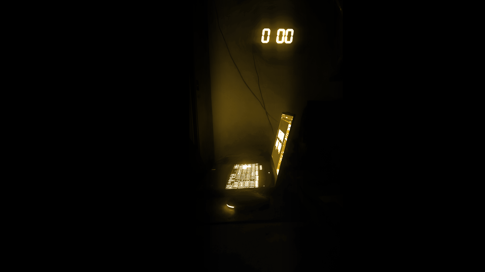
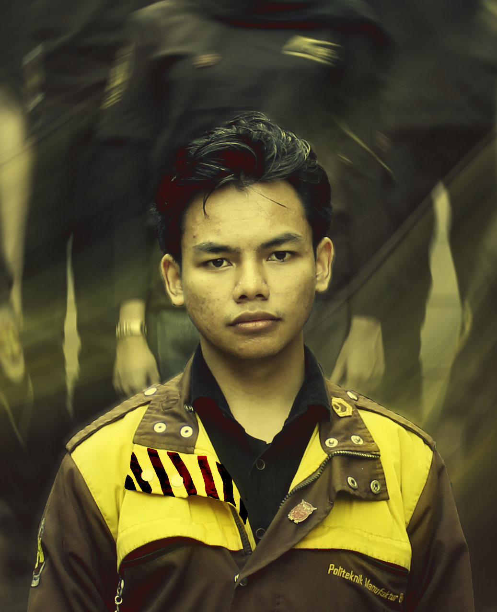

LOADING 3D MODEL...
Iron Within, Iron Without

ABOUT

A selection of projects showcasing expertise in engineering,
creativity, and digital craftsmanship.
A diverse set of technical and creative skills continuously developed
to transform ideas into practical, functional, and visually engaging solutions.
© 2026 Muhammad Faiz Firdaus